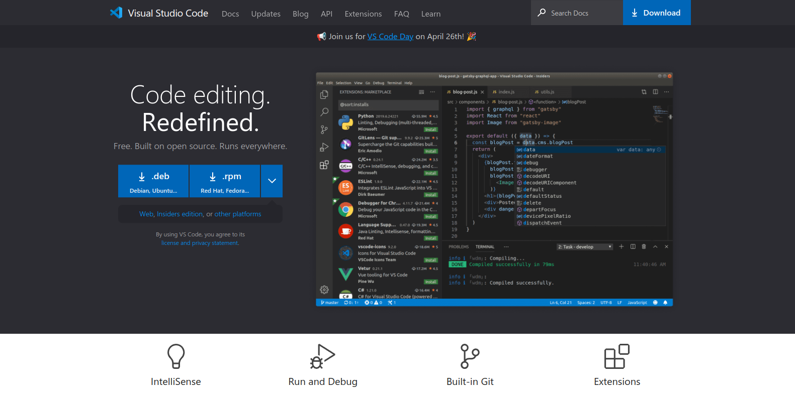
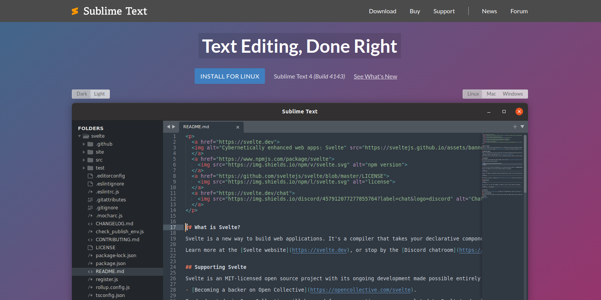
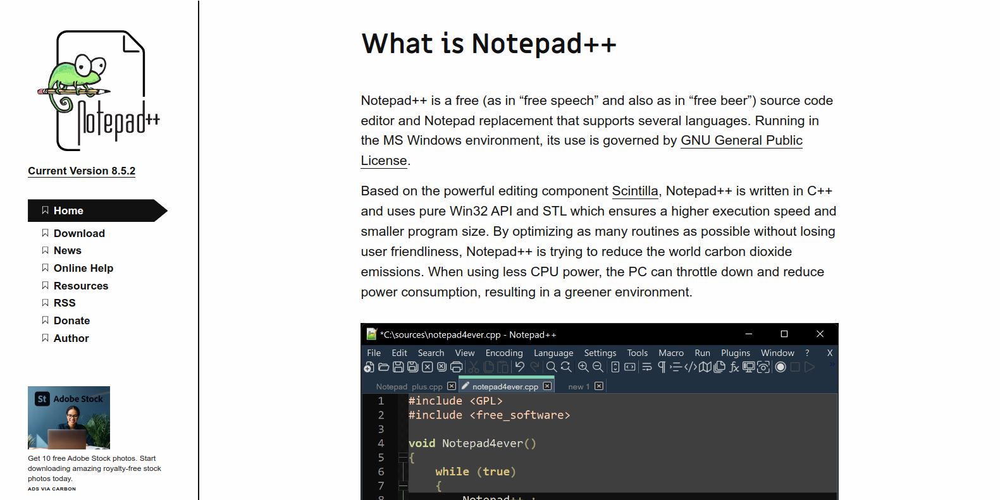
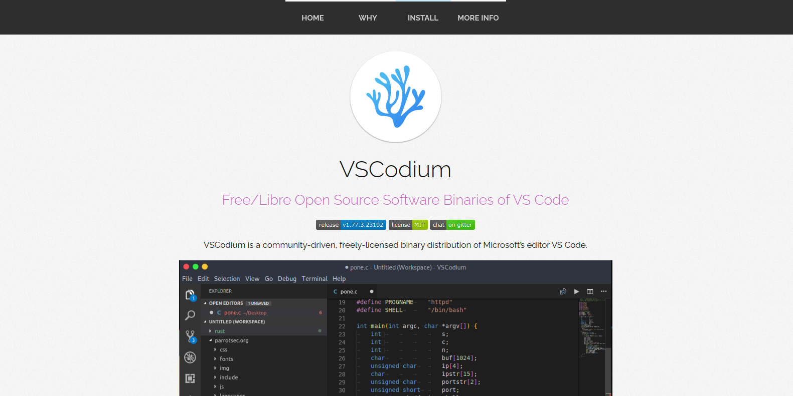
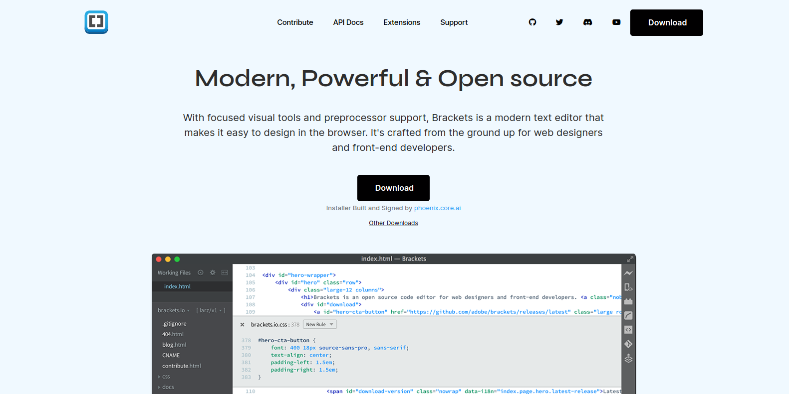

Text Editor Terbaik Untuk Web Developer
Pengertian Text Editor
Text Editor merupakan aplikasi yang digunakan untuk menulis syntak(Kode Program). Kita akan menggunakan Browser untuk melihat output dalam kode program
Memilih Text Editor
Berikut Text Editor Terbaik untuk web developer.
Visual Studio Code

Visual Studio Code dikembangkan oleh Microsoft. Namun text editor ini bisa digunakan oleh semua sistem operasi. Anda juga bisa menggunakan secara gratis.
Sublime Text 4

Saat ini Sublime Text sudah versi 4, text editor ini sangat ringan, cocok untuk spek komputer dengan ram 2 GB. Text editor ini berbayar, tetapi kamu masih bisa menggunakan versi gratisnya.
Notepad++

Notepad++ dibuat hanya untuk sistem operasi windows. Anda bisa menggunakan text editor ini dengan gratis. Notepad++ memiliki tampilan yang sederhana dan cukup ringan. Namun, Notepad++ tetap memiliki fitur utama yang dibutuhkan user mengedit HTML seperti Syntax Highlight dan Auto Complete.
VSCodium

VS Codium memiliki tampilan yang tidak beda jauh dengan Visual Studio Code. Namun VSCodium tidak bisa mensinkronisasi data user.
Brackets

Brackets Editor nerupakan aplikasi text editor yang dibuat untuk tujuan pembuatan desain website.
Kamu tinggal menentukan text editor yang cocok untuk kamu gunakan. Kamu bisa mencobanya satu satu. Dengan begitu kamu akan menemukan text editor yang kamu sukai.